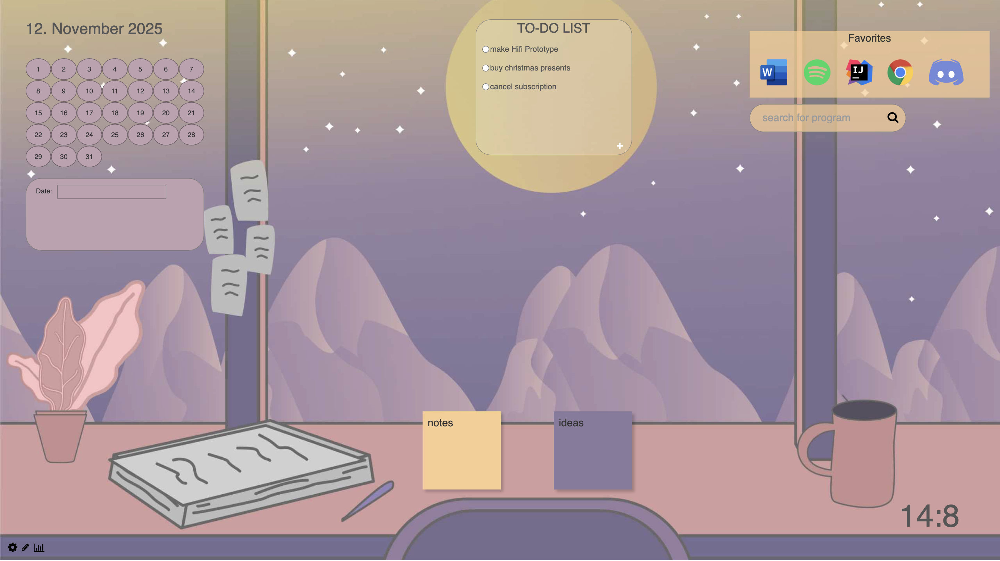
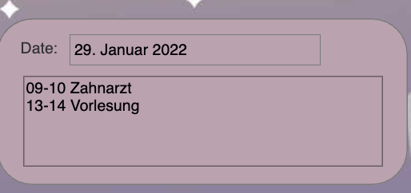

Virtual Desktop
Short Description
This was my first prototype I had to make for a course at Uni in my bachelors. The group project was to help users to have everything they use in one integrated system. The aim of this project is to come up with a virtual desk, where the applications and services that the user frequently needs and uses are gathered to be easily accessible. Similar to your physical desk where you put your laptop, your phone, pens, notebooks, headphones, and everything that you may need to access while working. This prototype was then implemented with Vue.js.
Screens of the prototype
Homepage of the application:
Detailed look at the ToDo Widget - it was possible to add new Todos:

More detailed look at the calendar, after clicking on a date you got to see the appointments of the day:
It was also possible on another page, to add new widgets and readjust their order: